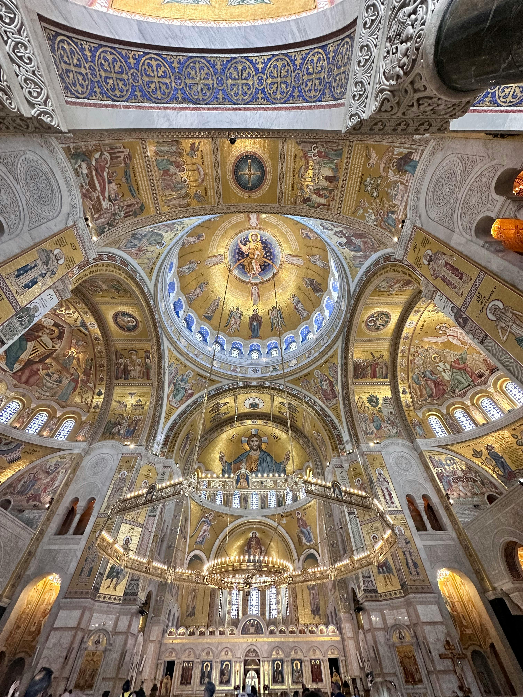
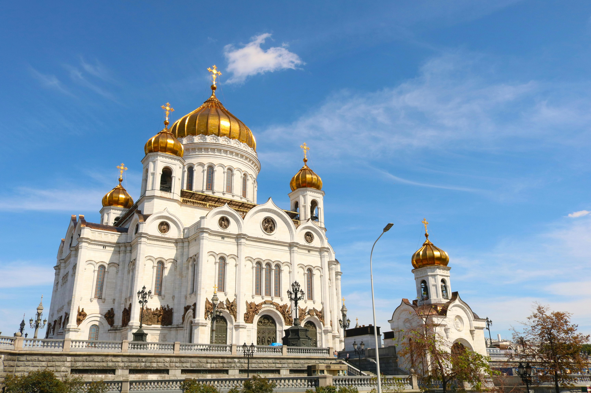

Über Orthodoxie
Die Orthodoxe Kirche ist die älteste christliche Kirche der Welt. Sie wurde direkt von den Aposteln gegründet, besonders an Pfingsten, als der Heilige Geist auf die Jünger herabkam. Seitdem hat sie den Glauben, die Liturgie und die Tradition der Urkirche über Jahrhunderte unverändert bewahrt. Man nennt sie auch die „östlich-orthodoxe Kirche“, weil sie besonders im Osten verbreitet ist.
Verbreitung:
- Griechenland
- Russland
- Serbien, Rumänien, Bulgarien
- Georgien
- Ukraine
- Naher Osten (Antiochia, Jerusalem)
- Äthiopien & Eritrea (orientalisch-orthodox)
- Auch in Westeuropa, Amerika & Australien
Merkmale orthodoxer Kirchen:
- Kuppeln: Symbolisieren den Himmel
- Gold, Weihrauch, Kerzen: zeigen Gottes Herrlichkeit
- Liturgie: alt, ehrwürdig, meist gesungen
- Ikonen: Fenster zum Himmel, nicht Deko 
Unterschiede zu westlichen Kirchen:
- Kein Papst – Christus ist das Haupt
- Theologie bleibt mystisch – keine Übererklärungen
- Keine modernen Lobpreisformen – Liturgie bleibt heilig
- Keine Orgeln, nur Gesang – viel Stehen
- Taufe durch Untertauchen – auch bei Babys
Fun Facts:
- 180+ Fastentage im Jahr
- Liturgie ist seit über 1'500 Jahren gleich
- Manche feiern Weihnachten am 7. Januar
- Athon-Mönche leben wie im Mittelalter
- Heilige wirken oft durch ihr Leben, nicht durch Bücher
- Grösste orthodoxe Kirche: Moskau – Christus-Erlöser-Kathedrale 